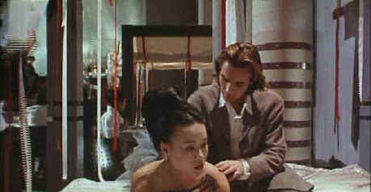

Columbial/1996/126m/Multi-Aspect/Subtitles
Greenaway’s use of multiple aspect ratios and film layered upon film is in itself erotic. Gossamer images overlay inserts of action are smaller segments of the screen. All the while, the hypnotic beat of the score, intricately composed to match the rhythms of the magic images, takes the viewer on a journey into uncharted waters.
 |
McGregor woos Wu with calligraphy©Columbia |
From the classic Japanese
book of a royal lady's life observations, The Pillow Book follows the
erotic patterns laid down in the classic book and intercuts them with Nagiko's modern tale. The
Pillow Book is not shy about sexual organs. There are more male parts than female and
the variety is displayed brazenly, but the nudity is integrated within the plot. Some
staggering violence may be too strong for the faint of stomach. But I emphasize that every
aspect of The Pillow Book is delivered with great taste and tact.
Vivian Wu is dazzling in the role of Nagiko, the fashion
designer, calligrapher, loving daughter, and relentless seeker of revenge. Ewan McGregor
lets it all hang out, so to speak, as Nagiko’s most passionate love. Yoshii Oida is
fascinating as the perverse publisher who dangles the carrot of success as a lure into
depravity.
The film has been modified from what I would guess was a 1.66
aspect ratio, but save for a couple of scenes that seemed cropped, all the pertinent
information is contained within the frame. In fact, most of the film is presented in wider
aspect ratios set within the 1.33 frame. The use of the screen is reminiscent of a
multimedia installation in a museum. The sound in Dolby Digital 2-channel stereo surround
is bold and dynamic. Color and black and white pictures are mostly sharp, with a couple
moderately soft scenes. Colors are brilliant and well contained and there was no evident
ringing of image. Parts of the film are in English, but the bulk is in Japanese with
English titles. Titles are in the black border when widescreen images are projected.